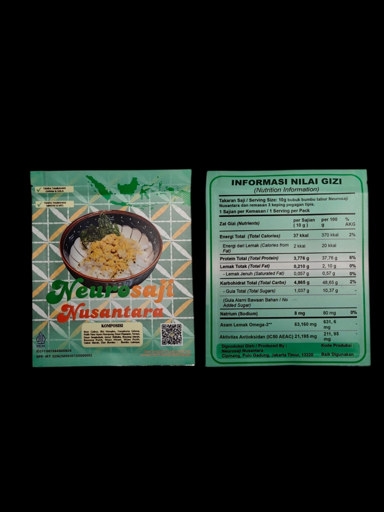

Inovasi Tanpa Gula dan Garam FIKSI 2026
Nikmat Tanpa Gula & Garam di Setiap Taburan
Bumbu tabur fungsional tanpa tambahan garam, gula, minyak, maupun MSG.
Tanpa Tambahan Garam
Tanpa Gula Pasir
Bebas Lemak & MSG

HALAL Ready!